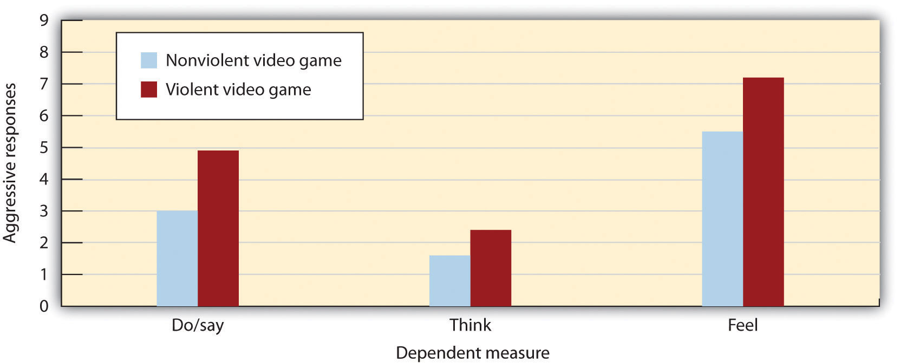
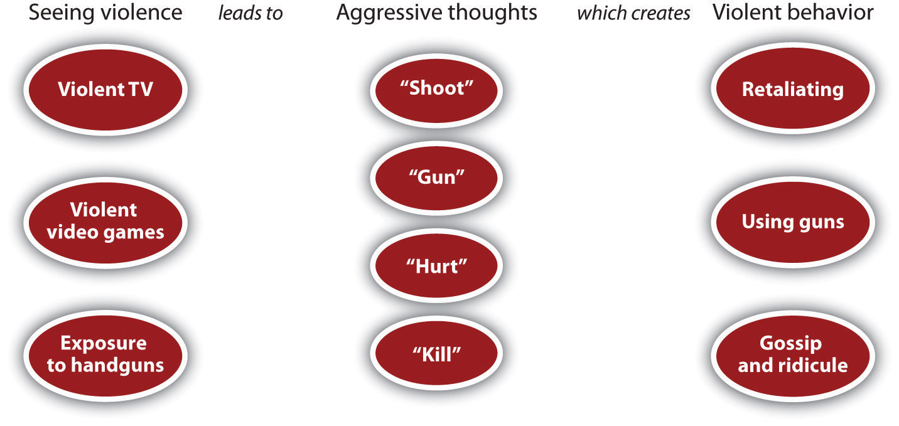

Although emotions and biology are critical, they are not the only determinants of our aggression. Of particular importance to social psychologists is the role of the social situation.
As would be expected by principles of social reinforcement, if we are rewarded for being aggressive, we’ll likely aggress again, but if we are punished for our violence, we may subsequently curb our aggression. The child who gets a toy by hitting another child and taking it is likely to continue being aggressive in the future, particularly if he or she is not punished for the action. Children who are more aggressive are also often seen as more competent, in part because they can use their aggression to get their way (Hawley, 2007).Hawley, P. H. (Ed.). (2007). Social dominance in childhood and adolescence: Why social competence and aggression may go hand in hand. Mahwah, NJ: Lawrence Erlbaum. Björkqvist et al. (2001)Björkqvist, K., Osterman, K., Lagerspetz, K. M. J., Landau, S. F., Caprara, G. V., & Fraczek, A. (Eds.). (2001). Aggression, victimization and sociometric status: Findings from Finland, Israel, Italy and Poland. Hauppauge, NY: Nova Science Publishers. found that girls who use nonphysical aggression reported being less lonely and were more likely to have higher status than did nonaggressive girls. In another study, aggressive boys were more likely to be accepted by their peers than were nonaggressive boys (Salmivalli, Kaukiainen, & Lagerspetz, 2000).Salmivalli, C., Kaukiainen, A., & Lagerspetz, K. (2000). Aggression and sociometric status among peers: Do gender and type of aggression matter? Scandinavian Journal of Psychology, 41(1), 17–24. Aggression seems to be paying off for these students.
Some aggression is learned through modeling the violence that we see all around us every day (Bandura & Walters, 1959).Bandura, A., & Walters, R. H. (1959). Adolescent aggression. New York, NY: Ronald Press. In his important research on aggression (see Video Clip 1), Albert Bandura demonstrated that children learned new aggressive behaviors by observing aggressive models (Bandura, 1973).Bandura, A. (1973). Aggression: A social learning analysis. Englewood Cliffs, NJ: Prentice-Hall. Bandura argued that we don’t just imitate the specific behaviors that we see, but that viewing aggression changes our schemas and our attitudes about aggression. Watching a parent hitting the other parent may not only increase a child’s likelihood of hitting but may also increase his or her beliefs that “hitting is OK” and that “one way to solve problems is by hitting.” Modeling teaches new ideas about aggression and can help explain why exposure to violence increases aggressive behavior in the long run (Huesmann & Kirwil, 2007).Huesmann, L. R., & Kirwil, L. (2007). Why observing violence increases the risk of violent behavior by the observer. In D. J. Flannery, A. T. Vazsonyi, & I. D. Waldman (Eds.), The Cambridge handbook of violent behavior and aggression (pp. 545–570). New York, NY: Cambridge University Press.
Modeling is particularly problematic for children who grow up in violent families. These children are not only the victims of aggression, but they also see violence being inflicted on their parents and siblings. Because children learn how to be parents in large part by modeling the actions of their parents, it is no surprise that there is a strong correlation between family violence in childhood and violence as an adult. Children who witness their parents being violent or who are themselves abused are more likely as adults to inflict abuse on their partners and children (Heyman & Slep, 2002).Heyman, R. E., & Slep, A. M. S. (2002). Do child abuse and interparental violence lead to adulthood family violence? Journal of Marriage and Family, 64(4), 864–870. In turn, their own children are also more likely to interact violently with each other and to aggress against their parents (Patterson, Dishion, & Bank, 1984).Patterson, G. R., Dishion, T. J., & Bank, L. (1984). Family interaction: A process model of deviancy training. Aggressive Behavior, 10(3), 253–267.
Although rewards clearly increase aggression, do you think that punishment decreases it? Judicial systems are based in large part on punishing people for being aggressive, with fines, jail terms, and even the death penalty being used as punishments. It has been argued that the dramatic decrease in crime in New York City during the 1990s was due to the “zero tolerance” policy of then Mayor Guiliani, in which the police gave tickets for even minor crimes such as vandalism and jaywalking.
There is, however, a problem with using punishment to reduce aggression, particularly when the punishment is itself aggressive. The problem is that the punishment may be modeled, which can increase the aggressive behaviors that we are trying to stop. In a recent meta-analysis, Gershoff (2002)Gershoff, E. T. (2002). Corporal punishment by parents and associated child behaviors and experiences: A meta-analytic and theoretical review. Psychological Bulletin, 128(4), 539–579. found that although children who were spanked by their parents were more likely to immediately comply with the parents’ demands, they were also more aggressive, showed less ability to control aggression, and had poorer mental health in the long term. The problem seems to be that children who are punished for bad behavior may be more likely to change their behavior only for external reasons, rather than internalizing the norms of being good for its own sake.
Punishment is most effective when it is intense, prompt (before the person can derive much pleasure from the aggression), applied consistently and with certainty, perceived as justified, and replaced by a more desirable alternative behavior (Berkowitz, 1993).Berkowitz, L. (1993). Aggression: Its causes, consequences and control. New York, NY: McGraw-Hill. But even if punishment occurs under these ideal conditions, it may only suppress aggressive behavior temporarily (Baron & Richardson, 1994; Berkowitz, 1993).Baron, R. A., & Richardson, D. R. (1994). Human aggression (2nd ed.). New York, NY: Plenum Press; Berkowitz, L. (1993). Aggression: Its causes, consequences and control. New York, NY: McGraw-Hill.
One example of the use of violence to attempt to stop violence is capital punishment—the use of the death penalty. Although banned in many countries, capital punishment is used in the United States in some cases of premeditated homicide. Although many people believe that capital punishment deters crime, there is little evidence that it actually does (Archer, Gartner, & Beittel, 1983).Archer, D., Gartner, R., & Beittel, M. (1983). Homicide and the death penalty: A cross-national test of a deterrence hypothesis. Journal of Criminal Law and Criminology, 74(3), 991–1013. For one, the time period between the crime and the punishment is many years long, which makes it less effective as a deterrent. Second, most of the crimes that are punished by the death penalty involve emotional aggression and are not premeditated. They occur during arguments or while the perpetrator is under the influence of alcohol or recreational drugs. In these cases even if the perpetrator has knowledge of the death penalty, this knowledge is not likely to have much effect on reducing crime. And capital punishment also means that many innocent people are wrongly executed for crimes they did not commit.
The average American child watches over four hours of television every day, and these programs contain both physical and nonphysical aggression (Coyne & Archer, 2005).Archer, J., & Coyne, S. M. (2005). An integrated review of indirect, relational, and social aggression. Personality and Social Psychology Review, 9(3), 212–230. Furthermore, the amount, intensity, and graphic nature of the violence that children view continues to escalate every year. It has been estimated that by the age of 12, the average American child has seen over 8,000 murders and 100,000 acts of violence (Huston et al., 1992).Huston, A. C., Donnerstein, E., Fairchild, H. H., Feshbach, N. D., Katz, P. A., Murray, J. P.,…Rubinstein, E. A. (1992). Big world, small screen: The role of television in American society. Lincoln, NE: University of Nebraska Press. At the same time, children are also exposed to violence in movies, video games, and virtual reality games, as well as in popular music and music videos that include violent lyrics and imagery.
Given your knowledge about the importance of the social situation, it might not surprise you to hear that these situational exposures to violence have an effect on aggressive behavior, and in fact they do. The evidence is impressive and clear: The more media violence people, including children, view, the more aggressive they are likely to be (Anderson et al., 2003; Cantor et al., 2001).Anderson, C. A., Berkowitz, L., Donnerstein, E., Huesmann, L. R., Johnson, J. D., Linz, D.,… Wartella, E. (2003). The influence of media violence on youth. Psychological Science in the Public Interest, 4(3), 81–110; Cantor, J., Bushman, B. J., Huesmann, L. R., Groebel, J., Malamuth, N. M., Impett, E. A.,…Smith, S. (Eds.). (2001). Some hazards of television viewing: Fears, aggression, and sexual attitudes. Thousand Oaks, CA: Sage. The relation between viewing TV violence and aggressive behavior is about as strong as the relation between smoking and cancer or between studying and academic grades (Bushman & Huesmann, 2010).Bushman, B. J., & Huesmann, L. R. (2010). Aggression. In S. T. Fiske, D. T. Gilbert, & G. Lindzey (Eds.), Handbook of social psychology (Vol. 2, 5th ed., pp. 833–863). Hoboken, NJ: John Wiley & Sons. If you watch a lot of violence, you are likely to become aggressive!
Figure 10.5
Participants who had recently played a violent video game expressed significantly more violent responses to a story than did those who had recently played a nonviolent video game. Data are from Bushman and Anderson (2002).Bushman, B. J., & Anderson, C. A. (2002). Violent video games and hostile expectations: A test of the general aggression model. Personality and Social Psychology Bulletin, 28(12), 1679–1686.
The evidence is so clear because it has come through the accumulation of many studies conducted over many years, using a variety of research designs. These studies have included laboratory and field experiments, as well as both cross-sectional and longitudinal correlational studies, and have used people from many different cultures. In the correlational studies, many potential common-causing variables, such as intelligence, family background, socioeconomic status, and personality, have been controlled. The potential for reverse causation has been eliminated through studies that have shown that viewing violence at a young age tends to predict aggressive behavior when the child is older, more than the other way around. Furthermore, laboratory studies in which people have been randomly assigned to view either violent or nonviolent material have shown the same results (Paik & Comstock, 1994; Zillman & Weaver, 1999).Paik, H., & Comstock, G. (1994). The effects of television violence on antisocial behavior: A meta-analysis. Communication Research, 21(4), 516–546; Zillman, D., & Weaver, J. B., III. (1999). Effects of prolonged exposure to gratuitous media violence on provoked and unprovoked hostile behavior. Journal of Applied Social Psychology, 29(1), 145–165. In one recent study, Coyne, Archer, and Eslea (2004)Coyne, S. M., Archer, J., & Eslea, M. (2004). Cruel intentions on television and in real life: Can viewing indirect aggression increase viewers’ subsequent indirect aggression? Journal of Experimental Child Psychology, 88(3), 234–253. found that adolescents who viewed either physical or nonphysical aggression were subsequently more likely to behave in an aggressive manner that those who viewed no aggression.
The Effects of Violent Video Games on Aggression
It is clear that watching TV violence can increase aggression, but what about violent video games? These games are more popular than ever and also more graphically violent. Children spend countless hours playing video games, many of which involve engaging in extremely violent behaviors. The games often require the player to take the role of a violent person, to identify with the character, to select victims, and of course to kill people. These behaviors are rewarded by winning points and moving on to higher levels and are repeated over and over.
Again, the answer is clear—playing violent video games leads to aggression. A recent meta-analysis (Anderson & Bushman, 2001)Anderson, C. A., & Bushman, B. J. (2001). Effects of violent video games on aggressive behavior, aggressive cognition, aggressive affect, physiological arousal, and prosocial behavior: A meta-analytic review of the scientific literature. Psychological Science, 12(5), 353–359. reviewed 35 research studies that had tested the effects of playing violent video games on aggression. The studies included both experimental and correlational studies, with both male and female participants in both laboratory and field settings. They found that exposure to violent video games is significantly linked to increases in aggressive thoughts, aggressive feelings, psychological arousal (including blood pressure and heart rate), as well as aggressive behavior. Furthermore, playing more video games was found to relate to less altruistic behavior.
Bushman and Anderson (2002)Bushman, B. J., & Anderson, C. A. (2002). Violent video games and hostile expectations: A test of the general aggression model. Personality and Social Psychology Bulletin, 28(12), 1679–1686. directly assessed the effects of viewing violent video games on aggressive thoughts and behavior. In one of their studies, participants were randomly assigned to play either a violent or a nonviolent video game for 20 minutes. Each participant played one of four violent video games (Carmageddon, Duke Nukem, Mortal Kombat, or Future Cop) or one of four nonviolent video games (Glider Pro, 3D Pinball, Austin Powers, or Tetra Madness).
Participants then read a story—for instance, this one about Todd—and were asked to list 20 thoughts, feelings, and actions about how they would respond if they were Todd:
Todd was on his way home from work one evening when he had to brake quickly for a yellow light. The person in the car behind him must have thought Todd was going to run the light because he crashed into the back of Todd’s car, causing a lot of damage to both vehicles. Fortunately, there were no injuries. Todd got out of his car and surveyed the damage. He then walked over to the other car.
As you can see in Figure 10.5, the students who had played one of the violent video games responded much more aggressively to the stories than did those who played the nonviolent games. In fact, their responses were often extremely aggressive. They said things like “Call the guy an idiot,” “Kick the other driver’s car,” “This guy’s dead meat!” and “What a dumbass!” Other studies have found similar results (Konijn, Nije Bijvank, & Bushman, 2007),Konijn, E. A., Nije Bijvank, M., & Bushman, B. J. (2007). I wish I were a warrior: The role of wishful identification in the effects of violent video games on aggression in adolescent boys. Developmental Psychology, 43(4), 1038–1044. and longitudinal studies in the United States and in Japan have shown that playing violent video games predicts aggressive behaviors and thoughts several months later, even after controlling for initial level of aggression (Anderson, Gentile, & Buckley, 2007; Anderson et al., 2008).Anderson, C. A., Gentile, D. A., & Buckley, K. E. (2007). Violent video game effects on children and adolescents: Theory, research, and public policy. New York, NY: Oxford University Press; Anderson, C. A., Sakamoto, A., Gentile, D. A., Ihori, N., Shibuya, A., Naito, M.,…Kobayashi, K. (2008). Longitudinal effects of violent video games on aggression in Japan and the United States. Pediatrics, 122(5), e1067–e1072.
There is strong evidence that viewing aggression on TV, playing violent video games, and exposure to violence in general tends to increase the likelihood of aggression. But why might viewing violence increase aggression?
Perhaps the strongest possibility is also the simplest—that viewing violence increases the cognitive accessibility of violence. When we see violence, violence is then activated in memory and becomes ready to guide our subsequent thinking and behavior in more aggressive ways. One way of understanding this process is shown in Figure 10.6 "Priming Aggression". According to this model, the activation from the viewed violence spreads automatically in memory from the perceived violent acts to other aggressive ideas and in the end increases the likelihood of engaging in violence (Anderson, Benjamin, & Bartholow, 1998).Anderson, C. A., Benjamin, A. J., Jr., & Bartholow, B. D. (1998). Does the gun pull the trigger? Automatic priming effects of weapon pictures and weapon names. Psychological Science, 9(4), 308–314.
Figure 10.6 Priming Aggression
Adapted from Anderson et al. (1998).Anderson, C. A., Benjamin, A. J., Jr., & Bartholow, B. D. (1998). Does the gun pull the trigger? Automatic priming effects of weapon pictures and weapon names. Psychological Science, 9(4), 308–314.
In the United States, most homicides are perpetrated with handguns. Every day, thousands of children bring guns to school, and gun-related violence kills an American child every three hours (Geen & Donnerstein, 1998; O’Donnell, 1995).Geen, R. G., & Donnerstein, E. (Eds.). (1998). Human aggression: Theories, research, and implications for social policy. San Diego, CA: Academic Press; O’Donnell, C. R. (1995). Firearm deaths among children and youth. American Psychologist, 50(9), 771–776. People who keep guns in their home are likely to be killed by that gun—particularly at the hands of a family member—and are also likely to kill themselves with it (Cummings, Koepsell, Grossman, Savarino, & Thompson, 1997; Wintemute, Parham, Beaumont, Wright, & Drake, 1999).Cummings, P., Koepsell, T. D., Grossman, D. C., Savarino, J., & Thompson, R. S. (1997). Association between the purchase of a handgun and homicide or suicide. American Journal of Public Health, 87(6), 974–978; Wintemute, G. J., Parham, C. A., Beaumont, J. J., Wright, M., & Drake, C. (1999). Mortality among recent purchasers of handguns. New England Journal of Medicine, 341(21), 1583–1589.
Although it is true that it is people and not the guns themselves that do the killing, principles of social psychology make it clear why possessing guns is so dangerous. Guns provide cues about violence, which makes it more likely that people will respond to provocation with aggression. In any particular situation of conflict or confrontation, we have several choices. We might try to escape the situation, we might confront the person in a nonviolent way, or we might choose to use violence. The presence of guns reminds us that we may respond with violence. When guns are around, violence is highly cognitively accessible, and this accessibility increases the likelihood of responding to provocation with violence.
Research has shown that the presence of guns provides a highly salient cue, which reminds us that aggression is a possible response to threat. Anderson, Benjamin, and Bartholow (1998)Anderson, C. A., Benjamin, A. J., Jr., & Bartholow, B. D. (1998). Does the gun pull the trigger? Automatic priming effects of weapon pictures and weapon names. Psychological Science, 9(4), 308–314. found that just having participants think about guns primed thoughts about aggression. But the link does not end there. In addition to priming aggressive thoughts and feelings, viewing handguns also increases violent behavior, particularly when we are provoked (Carlson, Marcus-Newhall, & Miller, 1990).Carlson, M., Marcus-Newhall, A., & Miller, N. (1990). Effects of situational aggression cues: A quantitative review. Journal of Personality and Social Psychology, 58(4), 622–633.
In one relevant study (Berkowitz & Lepage, 1967),Berkowitz, L., & Lepage, A. (1967). Weapons as aggression-eliciting stimuli. Journal of Personality and Social Psychology, 7(2, Pt.1), 202–207. male university students were given either one or seven painful electrical shocks, supposedly from another student, and then were given an opportunity to shock this person in return. In some cases a 12-gauge shotgun and a .38-caliber revolver were lying on the table near the shock key, whereas in other conditions two badminton racquets were near the key. The researchers found, first, that the students who had been shocked more times returned significantly more shocks to the partner than did those who had been shocked only once. But what about the presence of the guns? The researchers found that the guns did not significantly increase aggression for the participants who had received only one shock, but it did increase aggression for those who had received seven shocks. The presence of the guns seems to have elicited more aggressive responses from those who had been most provoked by the shocks. Given what you know about the importance of situational effects on priming, these results may not surprise you.
Another way that viewing violence increases aggression is through modeling. Children (and even adults) may simply imitate the violence they observe. Indeed, there is substantial evidence that people do copy the aggression that they read about or see in the media. For instance, when John Hinckley Jr. attempted to assassinate President Ronald Reagan in 1981, he was influenced by the violence that he had recently viewed in the movie Taxi Driver, as well as an infatuation with the movie actress Jodi Foster. Research also has found strong evidence for copycat suicides. The rate of suicide in the general population increases significantly in the months after famous people, for instance Marilyn Monroe or Kurt Cobain, commit suicide (Phillips & Carstensen, 1986).Phillips, D. P., & Carstensen, L. L. (1986). Clustering of teenage suicides after television news stories about suicide. New England Journal of Medicine, 315(11), 685–689. In short, viewing violence teaches us how and when we should be aggressive.
Another outcome of viewing large amounts of violent material is desensitizationThe tendency to become used to, and thus less influenced by, a stimulus., the tendency to become used to, and thus less influenced by, a stimulus. When we first see violence, we are likely to be shocked, aroused, and even repulsed by it. However, as we see more and more violence over time, we become habituated to it, such that subsequent exposures produce fewer and fewer negative emotional responses. In the end, we may begin to see violence as a normal part of everyday life and become accepting of it.
In sum, continually viewing violence substantially changes how we think about and how our brains respond to the events that occur to us (Bartholow, Bushman, & Sestir, 2006).Bartholow, B. D., Bushman, B. J., & Sestir, M. A. (2006). Chronic violent video game exposure and desensitization to violence: Behavioral and event-related brain potential data. Journal of Experimental Social Psychology, 42(4), 532–539. Frequent exposure to violence primes aggression and makes aggressive behavior more likely (Molitor & Hirsch, 1994).Molitor, F., & Hirsch, K. W. (1994). Children’s toleration of real-life aggression after exposure to media violence: A replication of the Drabman and Thomas studies. Child Study Journal, 24(3), 191–207. And viewing aggression frequently makes that aggression seem more normal and less negative. If we create for ourselves a world that contains a lot of violence, we become more distrustful and more likely to behave aggressively in response to conflict (Nabi & Sullivan, 2001).Nabi, R. L., & Sullivan, J. L. (2001). Does television viewing relate to engagement in protective action against crime? A cultivation analysis from a theory of reasoned action perspective. Communication Research, 28(6), 802–825.